Auflösung zum Board „Mischok Website UI UX Kickoff"
Dieses Dokument stellt die gebaute Startseite neben die Parameter, die wir im Kickoff-Board aufgestellt haben. Für jede Sektion steht hier, welche Aufgabe sie übernimmt, auf welchen der vier Design-Codes sie einzahlt und welche Entscheidung dahintersteckt — inklusive der Stellen, die noch offen sind.
Leitfrage des Boards: „Was müssen wir im UI/UX-Design jetzt berücksichtigen?" Die vier Prinzipien zahlen auf die Markencharaktere relevant, verlässlich, fokussiert, neugierig ein.
Ab Seite 3 steht je Sektion links der reale Screenshot und rechts die Herleitung. Die farbigen Marker zeigen, auf welche Codes die Sektion einzahlt:
Der Hebel · Bild gegen Bild
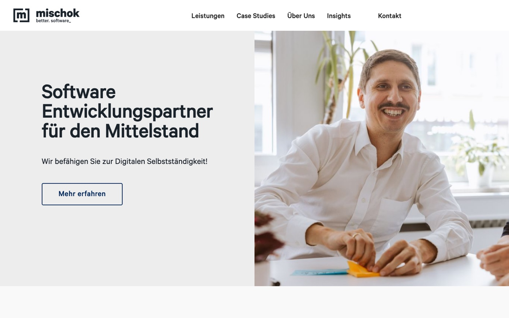
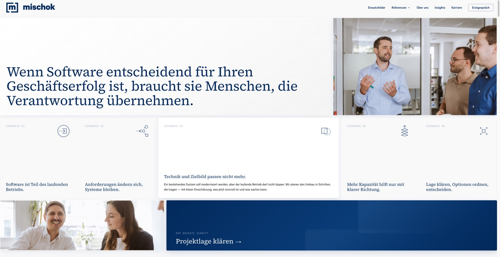
Der Hebel · Struktur
Die bestehende Home besteht aus einem Hero, zwei Case Studies und einer Logo-Leiste. Sie sagt wer MISCHOK ist. Sie sagt nicht, wann man MISCHOK braucht und wie gearbeitet wird — und sie belegt nichts. Die neue Home führt genau diesen Weg: Lage erkennen → Vorgehen verstehen → Haltung prüfen → Beleg sehen → Gespräch.
Sektion 01
In einem Screen beantworten: Wofür steht MISCHOK — und bin ich hier richtig? Der Anspruch steht als Satz, darunter fünf reale Ausgangslagen. Der Besucher erkennt sich in einer davon wieder, statt eine Leistungsliste zu lesen.
Code 2 nennt Bento-Layouts als Ordnungsprinzip. Der Hero ist ein zusammenhängendes Raster: Marke, Aussage, Beleg (Teamfoto) und Aktion liegen als Module nebeneinander — nicht als gestapelte Blöcke. Das Raster füllt den Viewport exakt, ohne Scrollaufforderung.
Sektion 01 · Detail
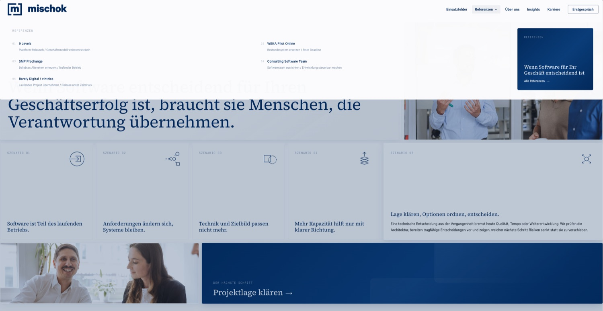
„Referenzen" öffnet keine Liste, sondern zeigt alle fünf Projekte mit ihrer Projektlage — also mit dem Problem, das dahinterstand. Der Besucher wählt nach seiner Situation, nicht nach Firmennamen.
Sektion 02
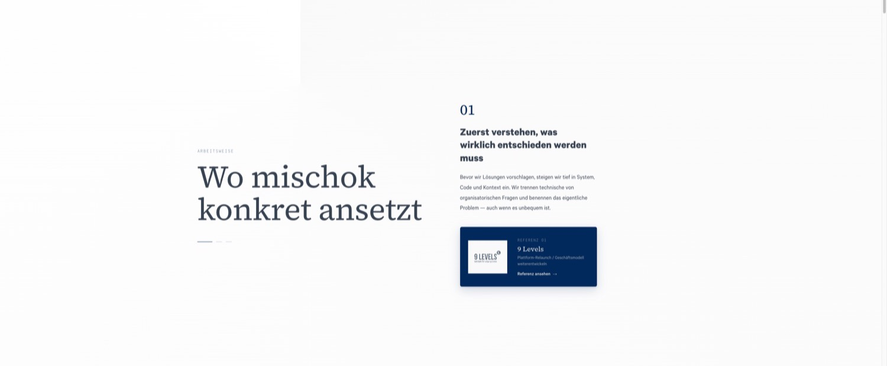
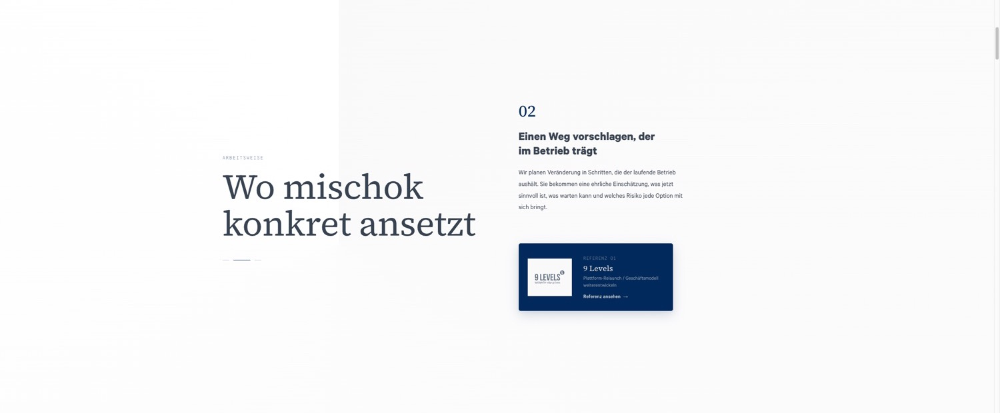
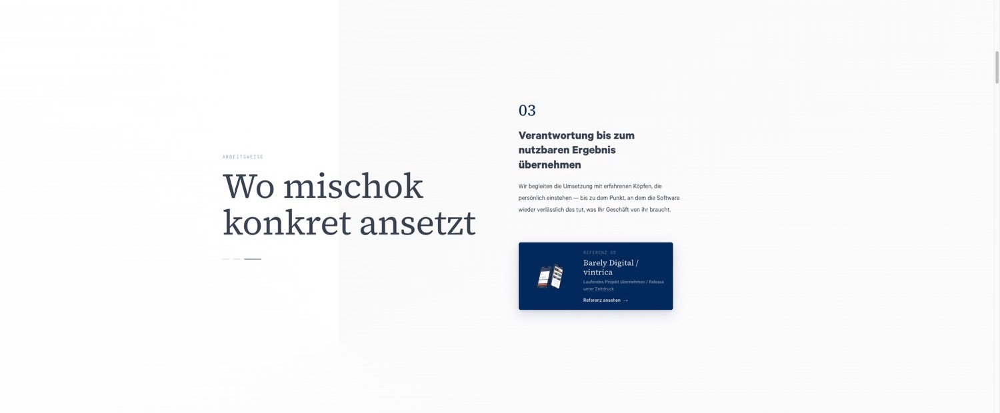
Die Frage nach dem Hero lautet: Und wie geht ihr vor? Drei Schritte — verstehen, Weg vorschlagen, Verantwortung bis zum Ergebnis. Jeder Schritt bringt seine eigene Referenz mit. Damit ist das Vorgehen keine Behauptung.
Die Sektion bleibt stehen, während die drei Schritte durchlaufen — eine Bewegung, ein Fokus (Code 1). Der Hintergrund führt einen wandernden Sektor im Markenblau mit, der die Sektion trägt, ohne Fläche zu werden.
Schritt 02 zeigt noch einmal 9 Levels. Für WEKA Pilot Online gibt es kein belegtes Projektvisual. Lieber dieselbe belegte Referenz zweimal als ein fremdes Bild, das eine Zuordnung behauptet, die es nicht gibt.
Sektion 03
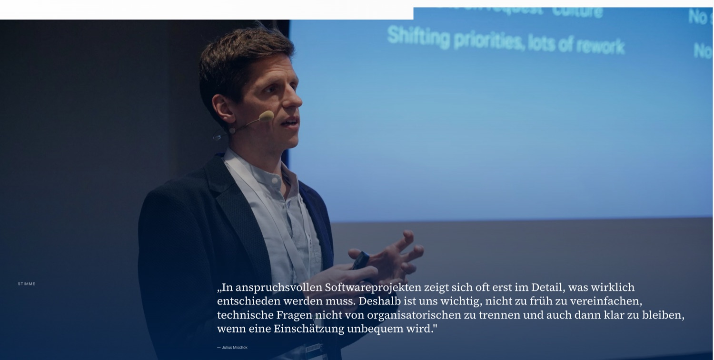
Nach dem Vorgehen kommt die Haltung. Ein Satz, der etwas riskiert: nicht zu früh vereinfachen, technische und organisatorische Fragen nicht trennen, auch dann klar bleiben, wenn eine Einschätzung unbequem wird. Gesagt von einer Person mit Namen und Gesicht.
Sektion 04
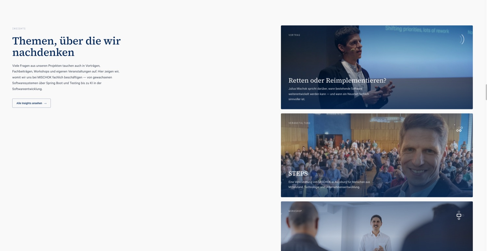
Zeigen, dass die Themen nicht nur im Kundenprojekt existieren, sondern auch auf der Bühne, im Workshop und in der eigenen Veranstaltung. Das ist der Unterschied zwischen „wir können das" und „wir stehen damit vor Publikum".
Sektion 05
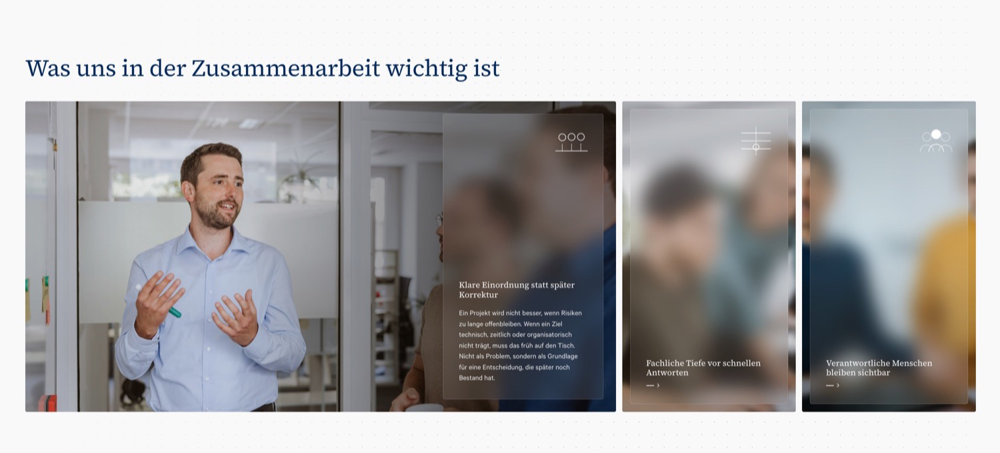
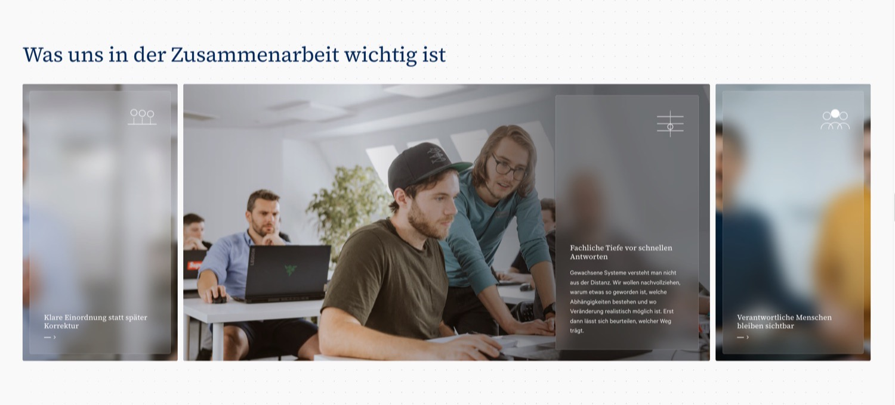
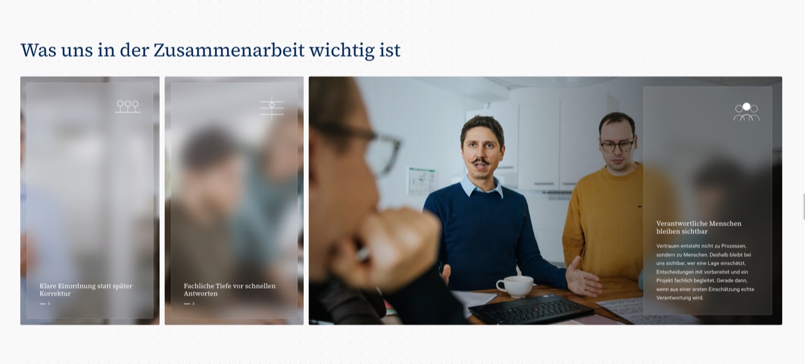
Drei Prinzipien, die im Projekt spürbar werden: früh einordnen statt später korrigieren, Tiefe vor schnellen Antworten, verantwortliche Menschen bleiben sichtbar. Jedes steht auf einem realen Arbeitsfoto — die Aussage und der Beleg sind dasselbe Element.
Sektion 06
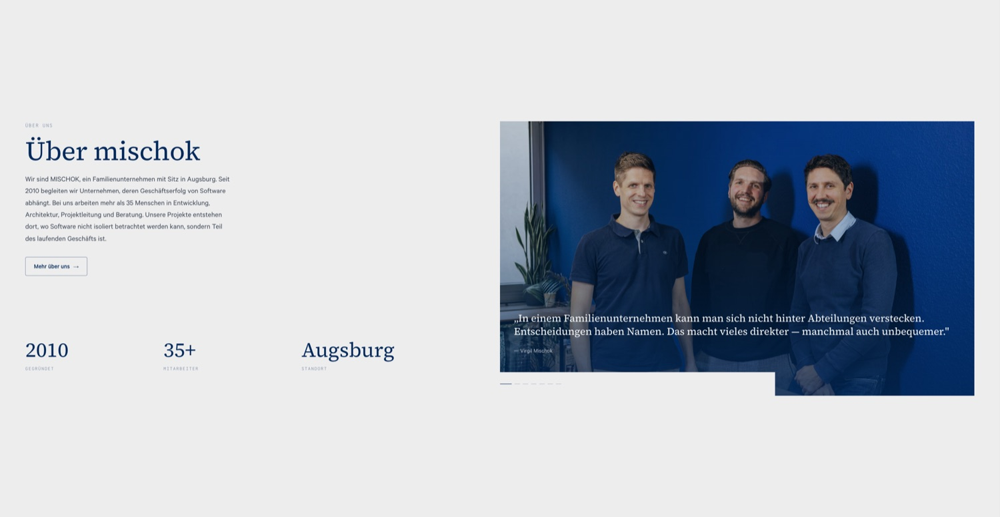
Wer steht dahinter? Ein Familienunternehmen in Augsburg, seit 2010, über 35 Menschen. Die Kennzahlen sind nachprüfbar und zählen beim Eintreten hoch. Das Zitat von Virgil benennt, was ein Familienunternehmen ausmacht — auch das Unbequeme.
Sektion 07 + 08
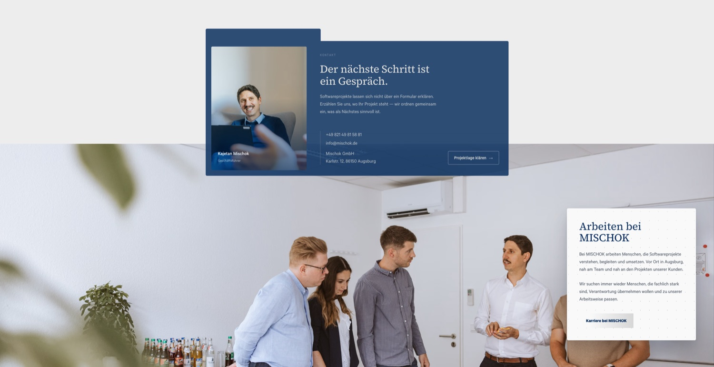
Der Weg ins Gespräch bekommt ein Gesicht: Kajetan Mischok, mit Namen, Rolle und Foto — kein Formular, kein „Kontaktieren Sie uns". Direkt darunter Karriere, weil es dieselbe Frage aus der anderen Richtung ist: Wer arbeitet hier?
Sektion 09
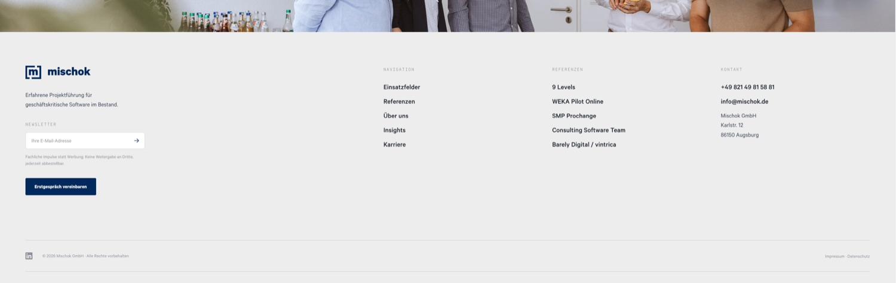
Wer bis hier gescrollt hat, soll nicht suchen müssen: Navigation, alle fünf Referenzen beim Namen, echte Kontaktdaten, Rechtliches.
Ehrlicher Stand
Diese Liste gehört ins Dokument, nicht in eine Fußnote. Sie ist der Unterschied zwischen einem Arbeitsstand und einer Behauptung.
clip-path und position: sticky schließen sich aus.prefers-reduced-motion durchgängig.